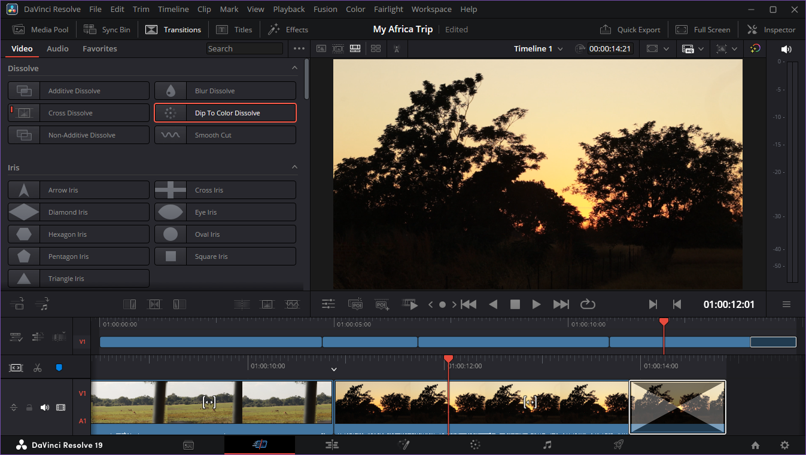
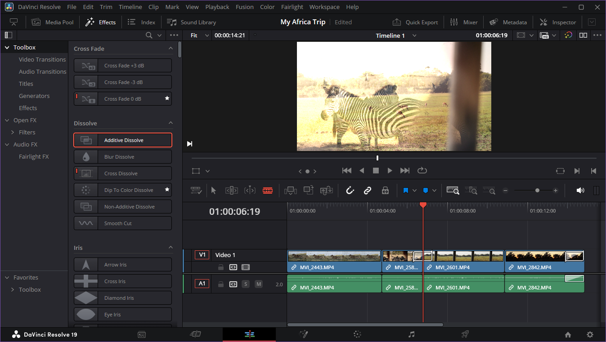

Add Transitions to Video and Audio
Overview
Use video and audio transitions to smooth out cuts in your video.
Procedure: Add transitions in the Cut Page
- Select Transitions in the toolbar
- Choose a video or audio transition from the options
- Add the transition to clips by doing one of the following:
- Drag the transition into the timeline
- Move the playhead to a clip and select Apply to Edit Point
- Adjust transition duration by changing its start or end point in the timeline

Some transitions are not available in the Cut Page.
Procedure: Add transitions in the Edit Page
- Select Effects in the top toolbar
- Go to Toolbox > Video Transition or Audio Transition
- Drag a transition to the start or end of a clip
- Adjust transition duration by changing its start or end point in the timeline

Tips
Favourite your most used transitions to access them quickly
Add transitions even faster from the Cut Page by selecting Apply to Start of Clip or Apply to End of Clip as you scroll through the timeline.
Clip: a piece of a video or audio file used in a timeline.